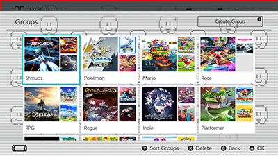

Skip to content
Switch Custom Game Icons & Themes
Flaunch Fix intro
Switch Custom Game Icons & Themes
Home
Before You Start
Before You Start
Prerequisites
Sys-Tweak
Sys-ftpd-light
SteamGridDB API
Themes
Themes
Supported Themes for Vertical & Horizontal
Installing A Theme
NX-GIC
NX-GIC
NX-GIC
Offline NX-GIC
Add New Via URL
Add New Via SteamGridDB
Add New Via Browse
TroubleShooting
Icon Grabber
Icon Grabber
Icongrabber
Themes & extra
Themes & extra
Icon Search
How to make your own icons
DiffPatching Option.szs
HBmenu Themes
14.0 Theme Fix
14.0 Theme Fix
Flaunch Fix intro
Prerequisites
LayoutEditor
LayoutKit
Switch Theme Injector
Thanks & Credits
FLaunch allapps FIX H.O.S 14.0.0
¶
Change this:
Into this:

SodaSoba on:
GBATemp
Reddit
GitHub